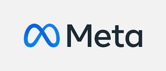
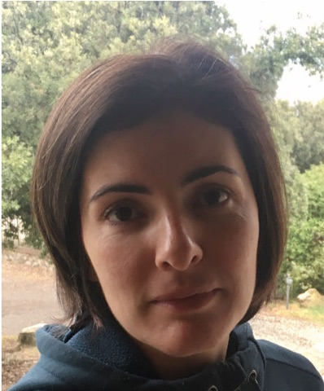
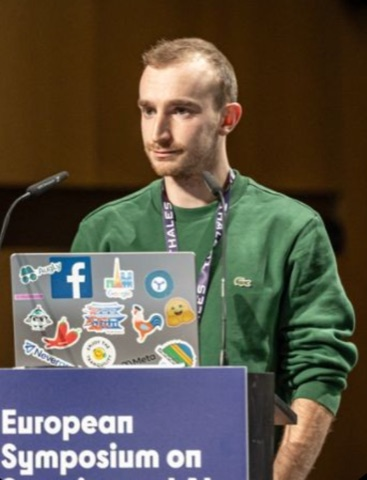

Live demos
Deployed systems, end to end
Attach Content Credentials, inspect them with independent tools, and recover an invisible watermark from AI-generated video after a round trip through a public video platform.
ACM Multimedia 2026 · Tutorial 5 · Half-Day · In Person
Algorithms · Multimodal Extensions · Benchmarks · Authenticity Frameworks


Invisible watermarking has re-emerged as core infrastructure for trustworthy generative AI, enabling content attribution, provenance, and responsible deployment at scale. This half-day tutorial offers a unified, end-to-end view of the field — from classical signal-processing foundations and modern learned watermarking to rigorous robustness benchmarking, downstream applications, and live demonstrations of deployed authenticity systems.
Fundamental questions remain open: capacity–robustness limits are not fully understood, generative removal attacks can erase many existing schemes, and interoperability across independently deployed systems is still unsolved. This is the second edition of the tutorial, following CVPR 2026, redesigned to be more focused and more interactive.
Researchers, graduate students, and practitioners in multimedia, computer vision, security, and trustworthy AI. Familiarity with deep-learning fundamentals is assumed; no prior background in watermarking is required. To follow the hands-on session, bring a laptop — the notebook runs in Google Colab.
New for ACM MM 2026
Building on audience feedback from the CVPR 2026 edition, we trimmed lecture material to make room for demonstrations, hands-on work, and discussion.
Live demos
Attach Content Credentials, inspect them with independent tools, and recover an invisible watermark from AI-generated video after a round trip through a public video platform.
Hands-on
Embed and extract payloads on your own images, measure imperceptibility, and stress-test robustness during the post-hoc watermarking session.
Open the notebook ↗Discussion
One panel closes each half of the afternoon, so questions can be raised while each topic is still fresh — instead of a single Q&A at the end.
Focus
Each session owns a distinct part of the field: deployment, evaluation, foundations, post-hoc practice, and applications.
Conference
ACM Multimedia 2026
Programme slot
Tutorial 5
Date
Saturday, November 14, 2026
Time
2:00 – 6:00 PM · BRT (UTC−3)
Room
Bora-Bora I
Format
In person
Windsor Convention & Expo Center · R. Martinho de Mesquita, 129 – Barra da Tijuca, Rio de Janeiro – RJ, 22620-220, Brazil.
Date, time, and room follow the official ACM MM 2026 programme — please check it for any last-minute changes. Registration is handled by the conference.
All times are local to Rio de Janeiro (BRT, UTC−3). Each talk includes five minutes of Q&A.
Opening
Dr. Vishal Asnani · Adobe Research
Tutorial overview, the evolution of watermarking, and why generative AI, media provenance, regulation, and attribution make it urgent now.
Talk 1 · Live demos
Dr. Shruti Agarwal · Adobe Research
Live demonstrations of deployed authenticity systems used by major technology platforms. The session traces verifiable provenance metadata from creation through inspection, shows how invisible watermarks persist across common internet transformations, and explores how multiple watermarking schemes from different providers can coexist and be discovered by independent verification platforms.
Talk 2
Prof. Furong Huang · University of Maryland
A rigorous framework for testing whether image watermarks survive realistic attacks without an unacceptable loss of image quality. Using the WAVES benchmark and lessons from the NeurIPS “Erasing the Invisible” competition, attendees compare distortion, regeneration, and adversarial attacks; examine beige-box and black-box threat models; and learn why adaptive stress testing is essential for building deployable watermarking systems.
Panel I
All speakers
Open Q&A on real-world provenance, durability, and interoperability — and on how watermark robustness should be measured.
Talk 3
Prof. Mauro Barni & Prof. Benedetta Tondi · University of Siena
Many of the questions facing modern watermarking are far from new. This talk revisits how the field matured from early empirical schemes into a theoretical framework — the imperceptibility, robustness, and payload trade-off, perceptual modeling, benchmarking, and informed watermarking as communication with side information — and asks what learning-based methods really change, from geometric robustness and desynchronization to payload and perceptual quality.
Talk 4 · Hands-on
Dr. Pierre Fernandez · Meta FAIR
Modern learned image watermarking, from HiDDeN to TrustMark, Pixel Seal, and SynthID, and its key trade-offs in capacity, robustness, and imperceptibility. Includes a live demo and a Colab notebook in which attendees embed, reveal, and stress-test watermarks on their own images.
Talk 5
Dr. Vishal Asnani · Adobe Research
A unified taxonomy of proactive schemes — signals deliberately embedded into media and models for attribution, ownership verification, privacy protection, and generative-model control — traced across text and LLMs, audio, model protection, diffusion models, and 3D, and connected to real-world content provenance pipelines.
Panel II · Closing
All speakers · closing remarks by Dr. Vishal Asnani
Open Q&A on classical versus learned watermarking, generative-AI watermarking, the limits of robustness, and emerging applications — followed by a short summary of the afternoon and pointers to slides and resources.
A multi-institution team spanning industry research labs and academia.
Research Scientist · Adobe Research
Vishal is a Research Scientist at Adobe Research in the Cross-modal Representation Learning (XRL) team in San Jose, working on Content Authenticity and Responsible AI — including watermarking and durable content credentials for video. He earned his PhD at Michigan State University, advised by Prof. Xiaoming Liu.
Research Scientist · Adobe Research
Shruti is a Research Scientist on the AI for Content Authenticity team at Adobe. Her work centers on content provenance and multimedia forensics — spanning watermarking, deepfake detection, and robust image fingerprinting. She was previously a postdoc at MIT CSAIL with Prof. Bill Freeman and earned her PhD at UC Berkeley with Prof. Hany Farid.
Associate Professor · University of Maryland
Furong is an Associate Professor in the Department of Computer Science at the University of Maryland, affiliated with UMIACS, the Maryland Robotics Center, AMSC, and ECE. Her research bridges trustworthy machine learning, sequential decision-making, and generative AI, with contributions to systematic stress-testing of watermark robustness.
Full Professor · University of Siena
Mauro is a Full Professor at the Department of Information Engineering and Mathematics, University of Siena, where he leads the Visual Information Processing and Protection (VIPP) group. His research spans digital watermarking for copyright protection, multimedia forensics, signal processing in the encrypted domain, and, more recently, adversarial machine learning and the protection of intellectual property in AI.

Assistant Professor · University of Siena
Benedetta is an Assistant Professor at the Department of Information Engineering and Mathematics, University of Siena, and a member of the VIPP Group led by Prof. Mauro Barni. Her research applies information-theoretic and game-theoretic methods to multimedia forensics, watermarking security, and adversarial signal processing for ML.

Research Scientist · Meta FAIR (Paris)
Pierre is a Research Scientist at Meta FAIR Paris. His research focuses on content protection, safety, and watermarking for generative models — making AI-generated content traceable and identifiable. He completed his PhD at FAIR / Inria Rennes with Matthijs Douze, Hervé Jégou, and Teddy Furon.
Papers covered or referenced in the tutorial, grouped by session.
Hands-on material, benchmarks, and tools used in the tutorial. Slides will be posted after the event.
Hands-on
Embed and extract watermarks on your own images, visualize distortion, and stress-test robustness. Used live in Talk 4.
Benchmark
Standardized stress tests for image watermarks across distortion, regeneration, and adversarial attacks.
Competition
The NeurIPS 2024 watermark-removal competition, with beige-box and black-box tracks.
Tool
Inspect the C2PA Content Credentials attached to an image or video.
Previous edition
Slides from all five talks of the June 2026 edition in Denver.
Proceedings
To appear in the ACM MM 2026 proceedings. DOI: 10.1145/3767308.3836606.
Available after publicationQuestions about the tutorial, accessibility requests, or collaboration ideas — we’re happy to hear from you.
Primary contact: vasnani@adobe.com
For updates as the event approaches, watch this page or the official ACM MM 2026 programme.